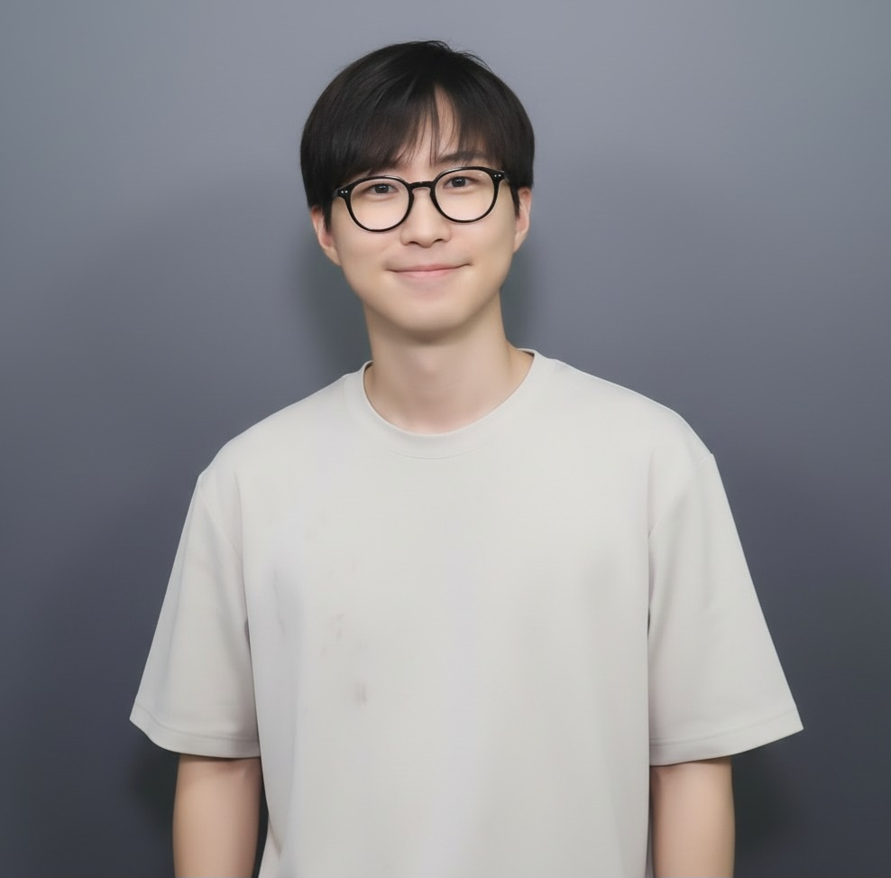
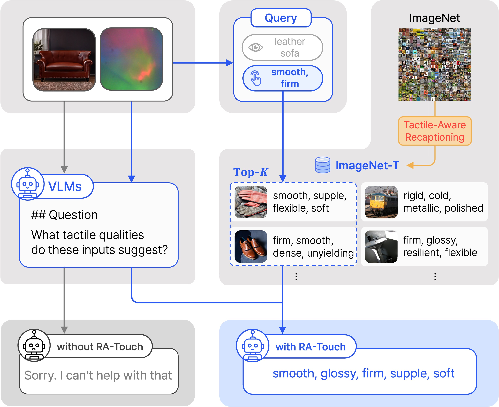

Semin Kim
I am a ML Engineer at SqueezeBits and an undergraduate studying Applied Artificial Intelligence at Sungkyunkwan University (SKKU).
My research interests include generative AI, multimodal learning, and physical AI, with a particular focus on making these systems more efficient. I enjoy exploring diverse problems and finding new ideas along the way.

Recent News
Publications

RA-Touch: Retrieval-Augmented Touch Understanding with Enriched Visual Data
ACMMM, 2025
A multimodal research project on touch understanding supported by enriched visual information.
Experience
Machine Learning Engineer
May 2025 — Present · Seoul, South Korea
Working on diffusion model optimization and efficient physical AI, with a focus on making generative models faster and more deployable.
Research Intern · Advisor: Sungeun Hong
Sep 2024 — Apr 2025 · Seoul, South Korea
Conducted research on multimodal learning and tactile perception.
Research Intern · Advisor: Junghyun Cho
Jul 2024 — Aug 2024 · Seoul, South Korea
Explored research problems in 3D vision at KIST through the UST summer internship program.
Education
B.S. in Applied Artificial Intelligence
Mar 2022 — Current · Seoul, South Korea
Projects
2025
An effective compression technique for Small Language Models, removing unused tokens from large multilingual vocabularies via language-based and frequency-based trimming. Achieved significant inference speed improvements on mobile devices while maintaining model quality.
Sep 2024 — Feb 2025
Efficient knowledge distillation method for vision transformers. Won 1st place in the brAIn Research Program at SKKU.
Sep 2024 — Jan 2025
Multimodal system for aphasia diagnosis and automated medical report generation. Received the Excellence Award in the SKKU Co-Deep Learning Project.